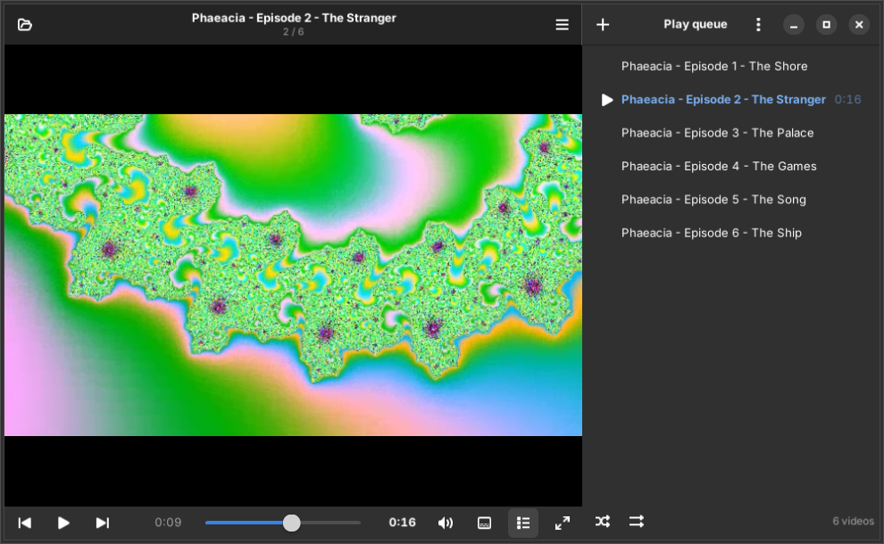
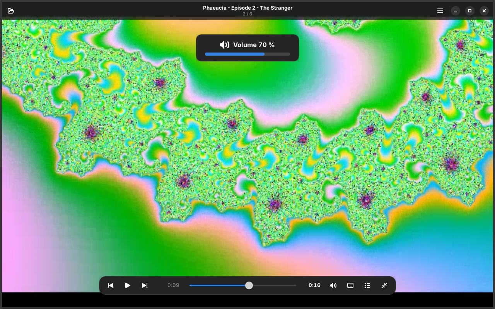
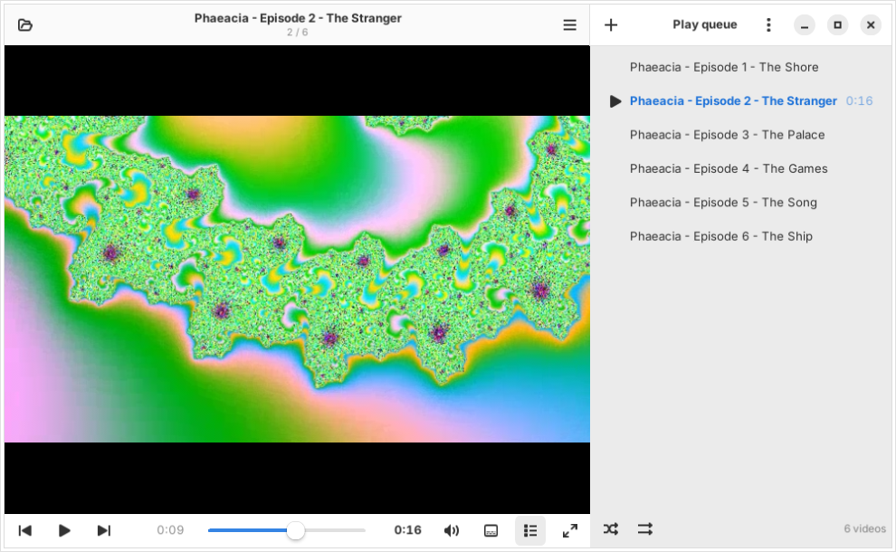
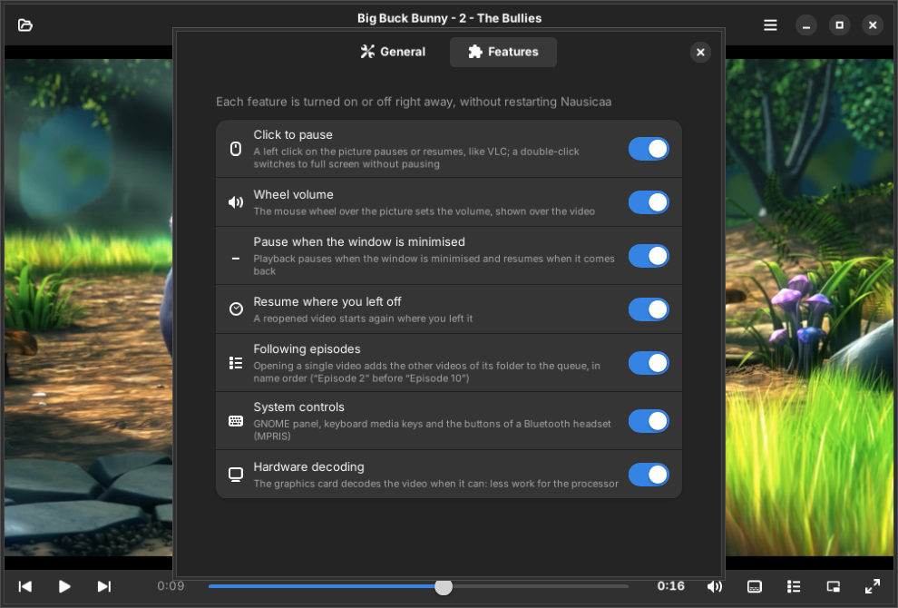
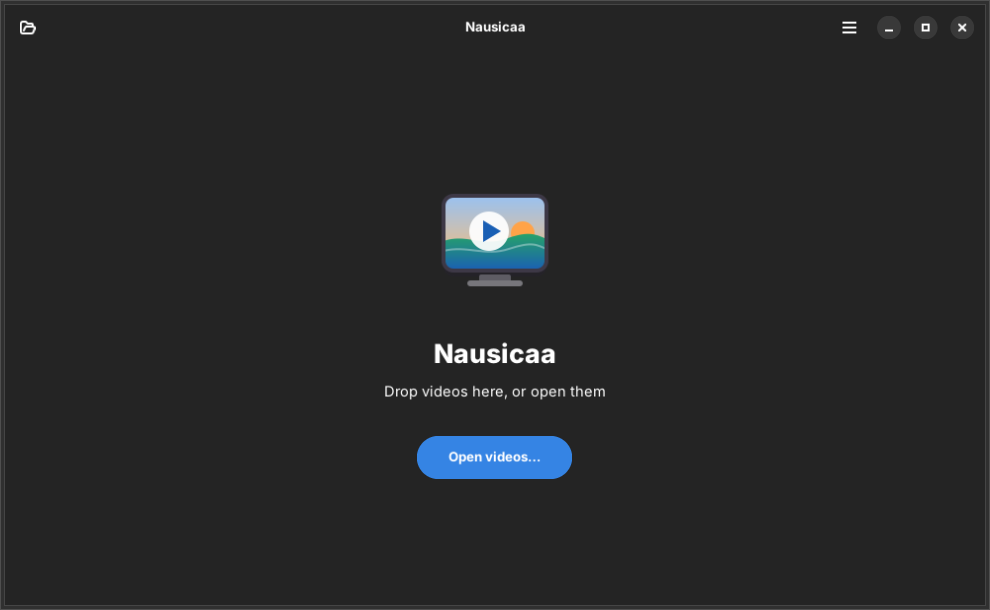

Nausicaa is a small video player for GNOME, built on the mpv engine. A simple window like Celluloid, the mouse habits of VLC — done right — and a queue that remembers where you stopped. No Flatpak.

Real screenshot · play queue (F9) · Adwaita dark
The gestures you learned with VLC, without its quirks. A click pauses right away; a double-click goes full screen and the video keeps playing.

Full screen · volume shown over the picture
Double-click “Episode 2” in your file manager: the other episodes of the folder join the queue, in the right order, and playback starts where you asked.
Nausicaa has no colours of its own: it follows your GTK4 theme, light or dark, with your accent colour. Only the bands around a film stay black — as they should.

Drag the handle
Don't like click-to-pause? Rather keep the queue as it is when you open a single file? Each feature turns off instantly, no restart.


No library, no database, no account: your videos stay in your folders, Nausicaa just plays them.
Almost every format and streams too (Ctrl+U), smooth playback, the picture drawn straight into the window.
libmpvFiles next to the video are found by themselves; add another one, or hide them with V.
.srt · .ass · .vttPick the language from the right-click menu, or set your favourite ones once.
fre · eng · gerFrom × 0.5 to × 2, and frame by frame with . and , when paused.
. ,Press S: the current image goes to your Pictures folder, named after the video and the time.
SDouble-tap your Bluetooth earbuds to pause, take them off and the video waits. GNOME's media panel too.
MPRISThe screen stays on while a video plays, and goes back to normal on pause.
inhibitSpace, ← / →, Ctrl+← / →, ↑ / ↓, M, F, F9… all listed in the shortcuts window.
F1A small Python app using your distribution's GTK and mpv — nothing duplicated.
aptNausicaa is available for Ubuntu 24.04 “Noble” and 26.04 “Resolute” and their derivatives — Zorin OS 18, Linux Mint 22 — from a PPA. Updates then arrive with the rest of your system.
$ sudo add-apt-repository ppa:nourpon/nausicaa $ sudo apt update && sudo apt install nausicaa
sudo apt install ./nausicaa_*_all.debRequirements: Python 3.10+, PyGObject, GTK ≥ 4.14, libadwaita ≥ 1.5, libmpv and python3-mpv — all installed by the package. In the spirit of Celluloid; foundations shared with Odysseus and Ithaca.